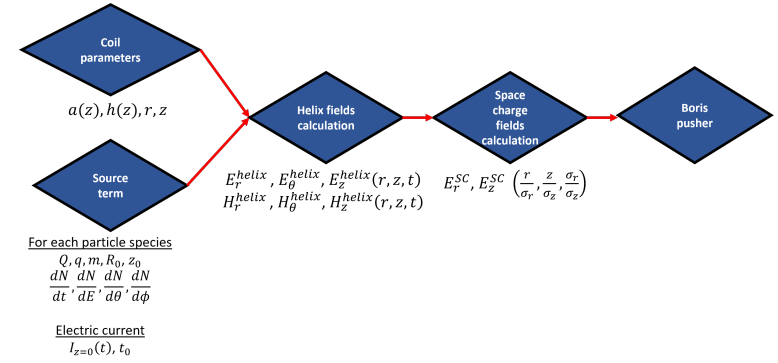
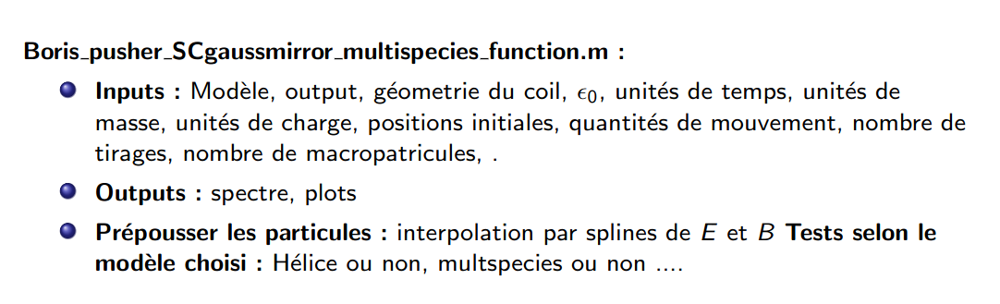
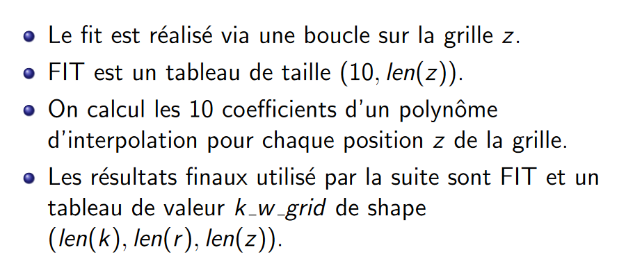

Dopplight est un code de simulation numérique conçu pour modéliser les champs électromagnétiques générés par une bobine helicoïdale dans le contexte de l'expérience TNSA. Le code est structuré autour du fichier principal, 'DoPPLIGHT.m', qui définit les modèles, les sorties, les bobines, et les entrées. Il réalise une série de calculs, notamment la création de grilles, le calcul des champs électromagnétiques, et l'évolution des particules à travers le pousseur de Boris. Le module 'SheathHelix_Pierce_function' joue un rôle central en calculant les composantes des champs électriques et magnétiques autour du coil, indépendamment du faisceau de particules. Le code vise à fournir une représentation précise des phénomènes physiques impliqués dans l'expérience TNSA, et il offre des fonctionnalités pour l'analyse des résultats, y compris la génération et l'affichage du spectre des particules. Il se prouve plus vite qu'un code de type PIC qui rend son utilité plus valorisable.
Voici un schéma plus concis sur le fonctionnement du code Dopplight :
Le module SheathHelix_Pierce_function est celui dédié au calcul principal des champs élétromagnétiques, dont les objectifs sont :
Le module Boris Pusher est celui dédié au qui effectue le calcul de la dynamique des particules :
Dans le but de s'affranchir du temps d'éxecution conséquent du code, on s'est fixé pour objectif l'optimisation des subroutines qui sont coûteuses dans le moduleet pour ce faire, on s'est proposé de tracer un histogramme du temps d'éxécution des différentes portions du code pou se décider sur laquelle optimiser.
On remarque que l'inversion de la relation de dispersion prouve très coûteuse, dont l'implémentation se résume par les étapes suivantes :
Avec r la 1ère composante spatiale et z la 2ème composante spatiale, FIT le tableau où est stocké les coefficients du polynôme interpolateur et k le nombre d'onde qu'on cherche à calculer.